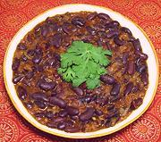

|
Kidney Bean CurryIndia - North (Punjab) - Malala Rajma | ||||
| Serves: Effort: Sched: DoAhead: |
4 main ** 1-1/2 hrs Better |
Kidney Beans are native to Central America, but have been enthusiastically adopted in India, along with other beans from the New World. This recipe is easy to make and very flavorful. See also Comments. | |||
|
1 3 1 3 2 12 ------ 12 1 1 1/2 1 1 ------ 1 3 1 ------ 3 1 |
c c T c in oz --- oz t t t t t --- in cl --- T c |
Red Kidney Beans (1) Water Salt (2) Water Cinnamon Stick Onion -- Tomato mix Tomatoes Coriander seed Chili Powder (3) Turmeric Garam Masala Salt -- Ginger mix Ginger Root Garlic Chili Serrano ----------- Oil Water |
Do Ahead - (8 hrs - 5 min work)
|